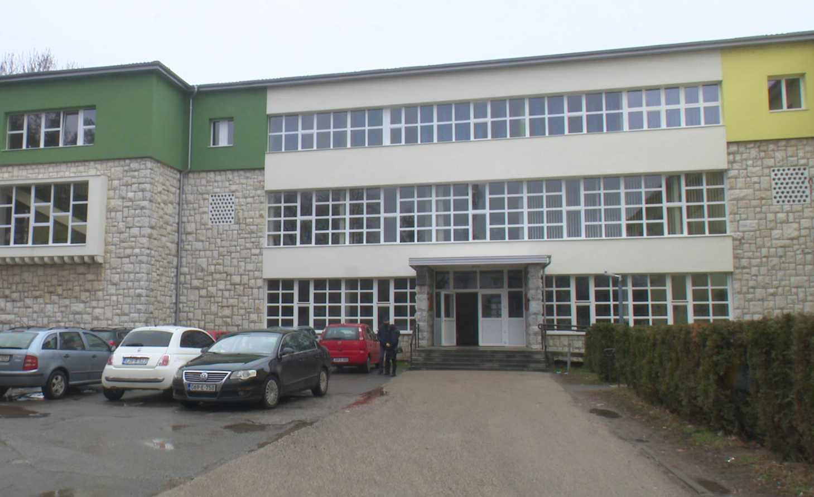

Gimnazija "Jovan Dučić" u Doboju je škola koja pruža opšte obrazovanje. Učenici se pripremaju za nastavak školovanja na fakultetima.
Nastava obuhvata širok spektar predmeta kao što su matematika, jezici, prirodne i društvene nauke. Škola je poznata po dobrim rezultatima učenika.